Latest News
500,000th Plate of Food for FFL Cape Town
On Saturday 14th March 2020, Food for Life Cape Town visited our friends in Hanover Park.
Sveta cooked the delicious 3,400 plates of food. BIG thanks to our lovely family of volunteers and community co-ordinators, who helped distribute the meals with love and devotion: Rateeqah, Pranlal, Laxmi, Nimla, Radhika, Anjali, and Darshan.
Today, we distributed our 500,000th plate of food since 2013 (i.e., half a million). For our small team, this is quite a significant milestone. We hope and pray that with God’s Grace, and the continued support of our volunteers, donors, distribution partners, and well-wishers, we can continue our humble service for many more years to come. It’s taken us 7 years to reach half a million, and our aim is to reach the next half million within 3 years from now. We humbly beg for your blessings and support in this regard.
A word of thanks to our sponsors for today, Amit Raga (who celebrated his birthday last week and also got married on Saturday – WOOHOO…CONGRATS and all the best in the next chapter of your life) and Laxmi Rama (who also celebrated her 40th birthday last Friday). THANK YOU ALL.
So, another great serve-out. Until next time… take care and lotsa love…
FOOD FOR LIFE VISIT IN RIEMVASMAAK 5th October 2019
On Saturday 5th October 2019, Food for Life Cape Town visited our friends in Riemvasmaak.
Sveta cooked the delicious 3,400 plates of food. We had the immense honour and privilege to host 2 VERY special guests: His Grace Agnidev Prabhu (Trinidad) and His Grace Medhavi Prabhu (USA). What a special day it was with the presence of these 2 larger-than-life personalities. BIG thanks to our lovely family of volunteers and community co-ordinators, who helped distribute the meals with love and devotion: Mama Jack, Phumla, Nilesh, Sveta, Shyam, Jade, Avinash, Gita Gamya, Darshan, Visvambara, Nandanandini, Mahesh, Nkosinath, Nilacala, Caitanya, Rahul, and Radha Kripa.
We also sent food to Haven shelters, Oasis Place, and a number of other areas in Cape Town.
If you’d like to be part of our family, please don’t hesitate to join us. Please also get in touch with us if you’d like to get involved at management level – we meet once a fortnight to discuss strategy and logistics. Also, we need help with media, publicity, marketing, fundraising, etc. We currently require another van, new food crates, a new kitchen site and equipment, someone to cook for us during the week….so there are MANY ways in which you could assist.
So, another great serve-out. Until next time… take care and lotsa love…
FOOD FOR LIFE CAPE TOWN VISITS STELLENBOSCH – 9th MARCH 2019
On Saturday 9th March 2019, Food for Life Cape Town visited our friends in Stellenbosch.
Sveta cooked the delicious 3,000 plates of food. BIG thanks to our lovely family of volunteers and community co-ordinators, who helped distribute the meals with love and devotion: Valerie, Sarasvati, Michaela, Premananda, Jaco, Kirodh, Amanda, Laiah, Ramanandini, Tara, Wilhemina, Esme, as well as a number of students (local and foreign-exchange) from Stellenbosch University.
We also sent food to 5 Night Haven shelters, Oasis Place, Lost City (distributed by Dereck, Jonathan, Ryan, and Demas), Eastridge (distributed by Jackie), Delft (distributed by Felicity and Latoya), Lotus River (distributed by Annelise, Luigi, Magdeline, Godfrey, Veleste, and Elizabeth), and Kuils River (distributed by Jamiela and Felicity).
If you’d like to be part of our family, please don’t hesitate to join us. Please also get in touch with us if you’d like to get involved at management level – we meet once a fortnight to discuss strategy and logistics. Also, we need help with media, publicity, marketing, fundraising, etc. We currently require another van, new food crates, a new kitchen site and equipment, someone to cook for us during the week….so there are MANY ways in which you could assist.
So, another great serve-out. Until next week… take care and lotsa love…
FOOD FOR LIFE CAPE TOWN VISITS GRABOUW – 11th AUGUST 2018
On Saturday 11th August 2018, Food for Life Cape Town visited our friends in Grabouw.
Sveta cooked the delicious 2,600 plates of food. BIG thanks to our lovely family of volunteers and community co-ordinators: Auntie Poppie, Auntie Shirley, Murari, Dale, Kevin, Daniel, Bhavananda, Sarasvati, Mbali, and our AWESOME singers Reggie and Christian.
We also sent food to 5 Night Haven shelters, Owl Shelter in Lansdowne, Tafelsig (distributed by Derrick, Craig, Ashril, Kyle, and Anthea), Uitsig (distributed by Tyrone, Aslena, Warren, and Sudesh), Lentegeur (distributed by Anthea, Perushia, and team), and Valhalla Park (distributed by Leon, Sandra, and Aqeelah).
If you’d like to be part of our family, please don’t hesitate to join us. Please also get in touch with us if you’d like to get involved at management level – we meet once a fortnight to discuss strategy and logistics. Also, we need help with media, publicity, marketing, fundraising, etc. We currently require another van, new food crates, a new kitchen site and equipment, someone to cook for us during the week….so there are MANY ways in which you could assist.
So, another great serve-out. Until next week… take care and lotsa love…
FOOD FOR LIFE CAPE TOWN VISITS OVERCOME HEIGHTS – 9th JUNE 2018
On Saturday 9th June 2018, Food for Life Cape Town visited our friends in Overcome Heights. Sveta cooked the delicious 2,600 plates of food. BIG thanks to our lovely family of volunteers and community co-ordinators: Mymoena, Aunty Fozie, Sudesh, Tyrone, Warren, and the Lyrical Reggie.
We also sent food to 5 Night Haven shelters, Owl Shelter in Lansdowne, Tafelsig (distributed by Derrick, Gerswin, and Klayton), Belhar (distributed by Leon and Vanessa), and Elsies River (distributed by Angelo and team).
If you’d like to be part of our family, please don’t hesitate to join us. Please also get in touch with us if you’d like to get involved at management level – we meet once a fortnight to discuss strategy and logistics. Also, we need help with media, publicity, marketing, fundraising, etc. We currently require another van, new food crates, a dedicated, interactive website, a new kitchen site and equipment, someone to cook for us during the week….so there are MANY ways in which you could assist.
So, another great serve-out. Until next week… take care and lotsa love…
üì∏ Image Timeline
üóìÔ∏è Saturday 14th March 2020


 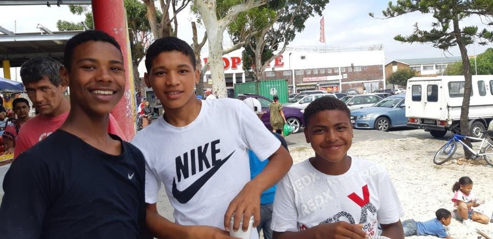
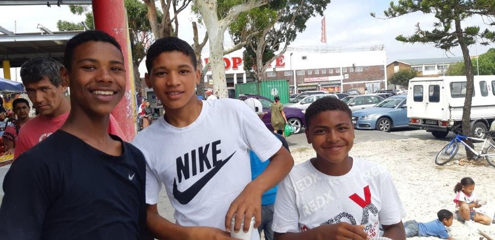

üóìÔ∏è On Saturday 5th October 2019


üóìÔ∏è On Saturday 9th March 2019
üóìÔ∏è On Saturday 11th August 2018

 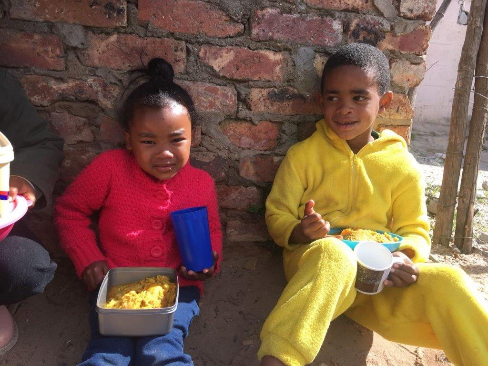
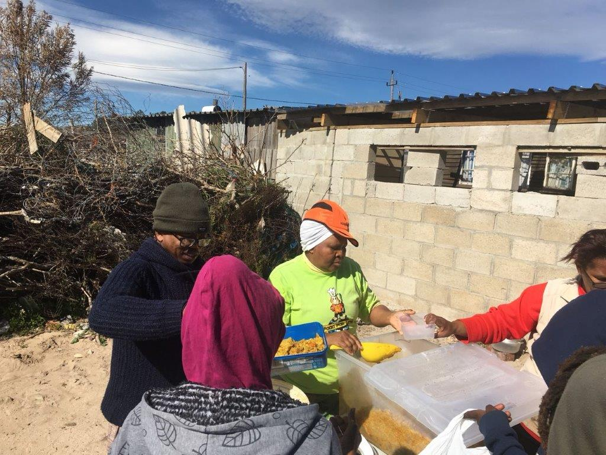
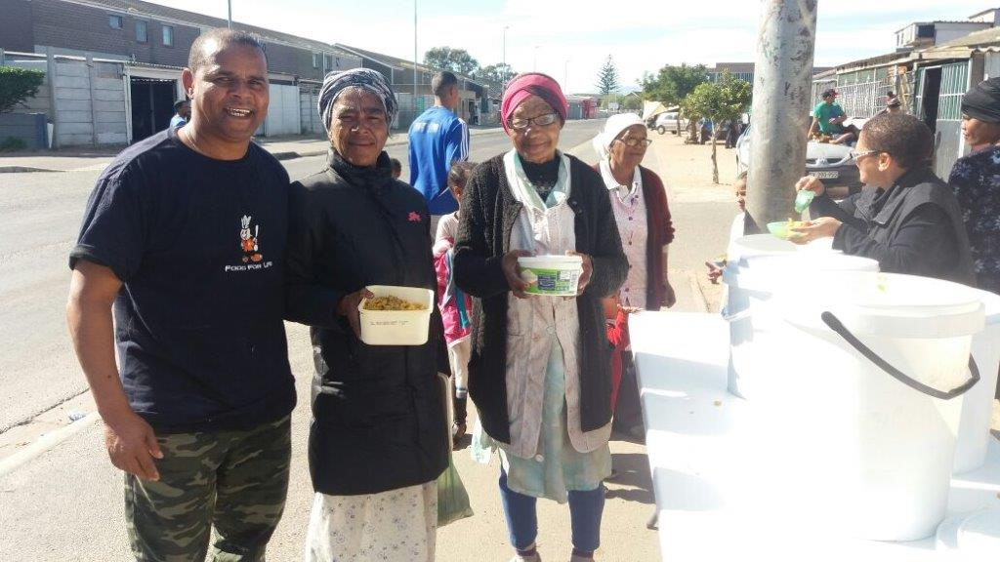
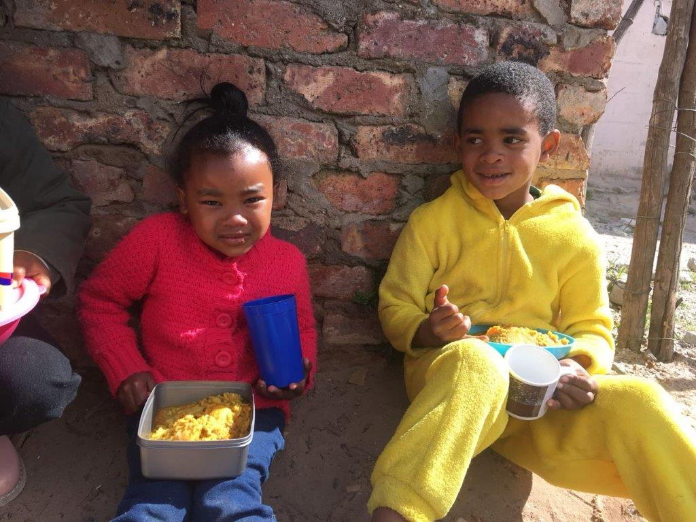
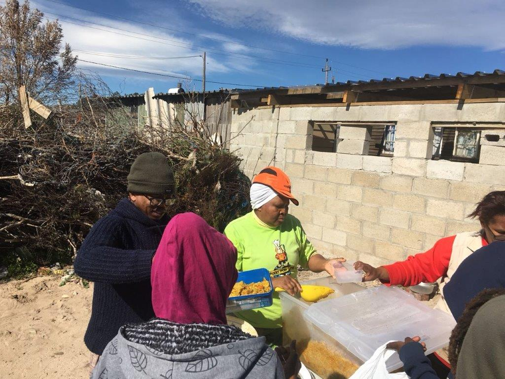
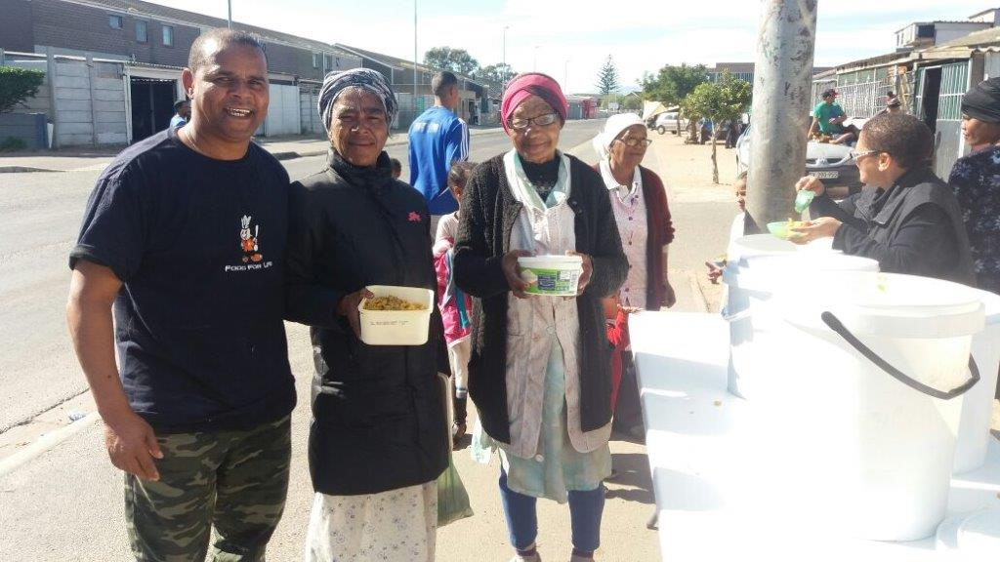
üóìÔ∏è On Saturday 9th June 2018/strong>
 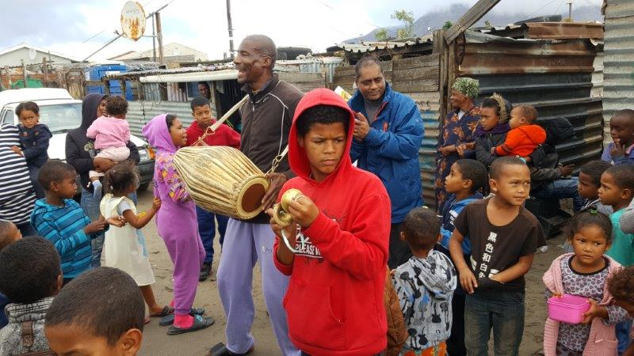
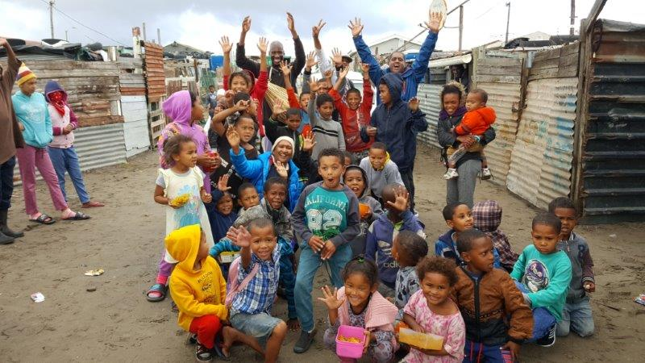
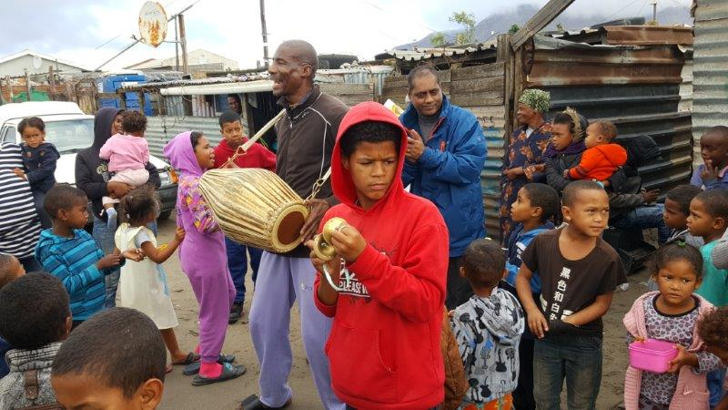
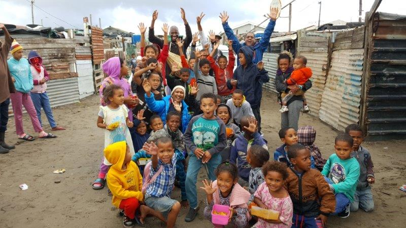

Get Involved
üåü Join us in spreading love and nourishment to those in need. Your support, whether through volunteering or donations, makes a huge impact!
üì© Contact us at foodforlifecapetown@gmail.com or call 031 811 1108 to see how you can help.
üíô Follow & Support Us:
#CreatingAHungerFreeNation #Charity #Nonprofit #Donate #Love #Fundraising #Community #Support #Help #Volunteer #GivingBack #MakeADifference #Hope #Change #Philanthropy
Contact Us
For more information or to get involved, reach out to us:
Email: info@foodforlife.org.za Phone: +27 12 345 6789 Address: 123 Compassion Street, Midrand, South Africa